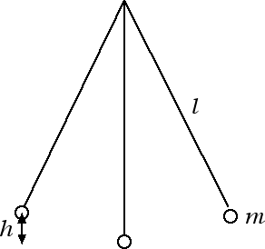
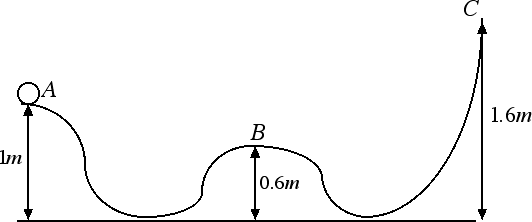

Conservazione dell'energia
Energia cinetica e potenziale gravitazionale II
Il principio di conservazione dell'energia vale indipendentemente dal fatto che la traiettoria del corpo sia una retta: vale ad esempio anche nel caso del moto di un pendolo, come andremo ad analizzare nel prossimo esercizio.
-
Quesito: Un pendolo di massa m = 200 g e lunghezza l = 140 cm viene sollevato ad un'altezza h = 10 cm dalla sua posizione di equilibrio. Si calcoli la massima velocità raggiunta dal pendolo nella sua oscillazione e l'energia meccanica del sistema.

Risposta: Quando il pendolo viene spostato dalla sua posizione di equilibrio e viene portato ad un'altezza h acquista energia potenziale gravitazionale; in tale posizione la sua energia meccanica è interamente potenziale gravitazionale Em = U = m g h, mentre la sua energia cinetica è nulla. Nella configurazione in cui il pendolo è disposto in verticale avremo invece che la sua energia potenziale gravitazionale è nulla e la sua energia meccanica coincide con l'energia cinetica Em = K = 1/2 m v2. È chiaro che questa è la configurazione in cui è massima la velocità del pendolo. Dalla conservazione dell'energia meccanica otteniamo 1/2 m v2 = m g h da cui avremo che v2 = 2 g h = 2 · 9.8 m / s2 · 0.1 m = 1.96 m2 / s2. Estraendo la radice quadrata, otteniamo infine che la velocità massima raggiunta dal pendolo è v = 1.4 m / s. Il dato relativo alla massa del pendolo m = 200 g = 0.2 kg ci consente invece di calcolare l'energia meccanica del sistema. Siccome l'energia meccanica si conserva basterà calcolare l'energia meccanica nella configurazione iniziale per avere l'energia meccanica ad ogni istante di tempo: Em = m g h = 0.2 kg · 9.8 N / kg · 0.1 m = 0.196 J.
-
Quesito: Consideriamo una biglia di massa m = 100 g che parte dal punto A con una velocità pari a 2 m / s. Stabilire se la biglia arriva nei punti B e C.

Risposta: All'istante iniziale la biglia di massa m = 100 g = 0.1 kg possiede sia energia cinetica che potenziale gravitazionale. Pertanto la sua energia meccanica è data dalla somma delle due: Em = 1/2 m v2 + m g h = (1/2 · 0.1 · 22 + 0.1 · 9.8 · 1) J = 1.18 J. In B l'energia potenziale gravitazionale è UB = 0.1 kg · 9.8 N / kg · 0.6 m = 0.59 J. Se non c'è attrito l'energia meccanica iniziale, pari a 1.18 J, si conserva ed è sufficiente a far arrivare il corpo in B. Il corpo arriverà in B con un'energia cinetica data dalla differenza 1.18 J - 0.59 J = 0.59 J e quindi con una velocità che gli consente di procedere oltre. In C l'energia potenziale gravitazionale è UC = 0.1 kg · 9.8 N / kg · 1.6 m = 1.57 J. In questo caso l'energia meccanica del corpo, 1.18 J, non è sufficiente a far raggiungere al corpo il punto C. L'altezza massima h che il corpo può raggiungere si ha quando l'energia meccanica è interamente potenziale gravitazionale ossia: m g h = 1.18 J da cui h = 1.18 J / (m · g) = 1.18 / (0.1 · 9.8) m = 1.2 m. Quando il corpo raggiunge tale altezza si ferma e torna indietro.